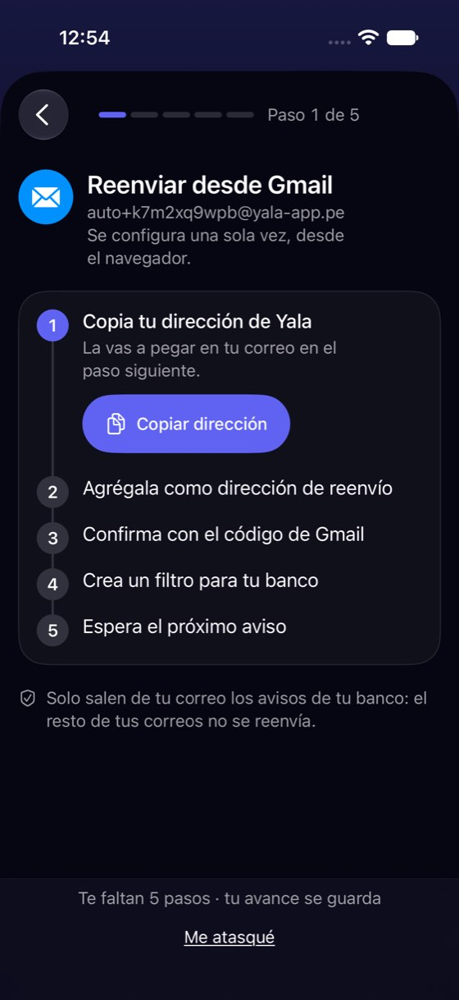
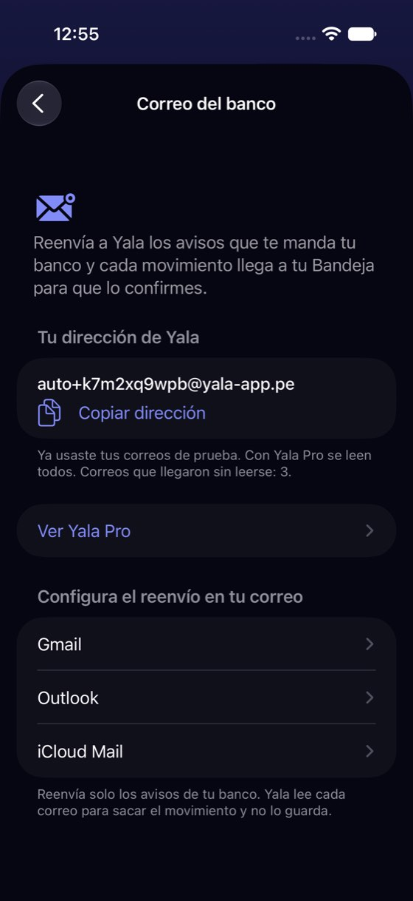
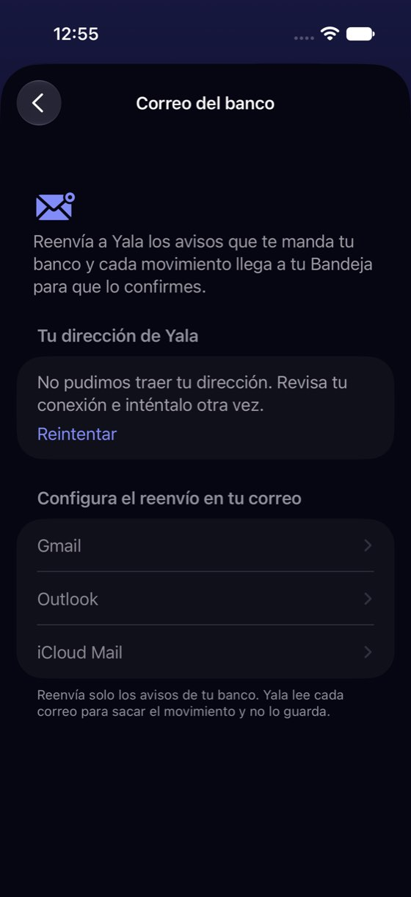

Configurar el correo del banco: cinco pasos en el navegador y nunca se sabe si funcionó
Hoy
Capturas del simulador (app de origin/2.3, semillas de prueba). Pasos hoy: 5 pasos de la guía, 3 dentro de Gmail en el navegador; después, ninguna señal




De dónde sale
- Captura Capturas 61-65: la pantalla y la guía de Gmail, «Paso 1 de 5», «Te faltan 5 pasos · tu avance se guarda».
- Captura Captura 66 (variante local de prueba agotada): «Ya usaste tus correos de prueba… Correos que llegaron sin leerse: 3» y «Ver Yala Pro».
- Captura Captura 67 (variante local sin conexión): «No pudimos traer tu dirección…», Gmail, Outlook e iCloud Mail apagados.
- Código
BankEmailForwardingView.swift:154-161: los proveedores se apagan sin dirección (.disabled(model.info == nil));lastReceivedAtMsno se usa en ninguna vista. - Código Las dos variantes (agotada y sin conexión) se sacaron con un cambio local que no se publica (
fuente/semilla-bandeja-8.patch): el simulador no tiene servidor.
Las opciones
De 3 a 5 alternativas con el mismo caso. Desliza cada recorrido; el anillo cian marca dónde toca Lucía.
Estado vivo arriba: ¿llega o no llega?
Encima de la dirección, una tarjeta dice lo que el servidor ya sabe: Funcionando · último aviso hace 2 h, o Aún no llega ningún aviso con qué revisar. La prueba gratis se cuenta ahí mismo.
A favor
- Responde la duda número uno tras configurar: «¿funcionó?».
- El dato ya llega del servidor (último aviso).
En contra
- «Aún no llega» puede ser solo que el banco no mandó nada todavía: el texto tiene que decirlo.
Empezar por el banco, no por el correo
Antes de los pasos, Lucía elige su banco. Con eso el paso del filtro trae escrita la dirección desde la que su banco manda los avisos, en vez de «busca la dirección de tu banco».
A favor
- Quita el paso más difícil: encontrar la dirección del remitente en Gmail.
- Abre la puerta a reconocer mejor cada banco.
En contra
- Hay que mantener la lista de bancos y sus remitentes (cambian).
- «Otro banco» sigue con el paso de hoy.
Hacerlo en la computadora
Los pasos 2 a 4 se hacen en Gmail desde el navegador, y en el teléfono es incómodo. Un botón manda los pasos (con la dirección ya escrita) a su propio correo para hacerlos en la computadora; el teléfono avisa cuando llega el código o el primer aviso.
A favor
- Lo difícil se hace con teclado y pantalla grande.
- El teléfono sigue mostrando el avance.
En contra
- Mandar correos desde Yala es un envío nuevo (dirección, plantilla, privacidad).
- Dos aparatos para una tarea.
La fila se ve siempre y explica por qué no se puede
Con los datos en iCloud la fila «Correo del banco» aparece igual, con «Necesita la nube». Al tocarla, una pantalla explica por qué y lleva a «Dónde viven tus datos». Sin conexión, la dirección dice que se verá al conectarse y los pasos no se apagan del todo: se pueden leer.
A favor
- Quien usa iCloud se entera de que existe y por qué no lo tiene.
- No cambia la regla de fondo (sigue exigiendo la nube).
En contra
- Una fila «que no se puede usar» puede leerse como publicidad de la nube.
- Depende de cómo se explique la nube (zona 41).
Lado a lado
La última pantalla de cada recorrido, frente a hoy.
Comparación
| Opción | Pasos para el caso (maqueta) | Esfuerzo | Riesgo | Reabre |
|---|---|---|---|---|
| Hoy | 5 pasos de la guía, 3 dentro de Gmail en el navegador; después, ninguna señal | — | — | — |
| E1 · Estado vivo arriba: ¿llega o no llega? | 0 toques para saber si funciona (hoy: no se puede saber en la app) | bajo | bajo | — |
| E2 · Empezar por el banco, no por el correo | 1 toque más al empezar; el paso 4 se acorta | alto | medio | — |
| E3 · Hacerlo en la computadora | 1 toque y el resto fuera del teléfono | medio | medio | — |
| E4 · La fila se ve siempre y explica por qué no se puede | 1 toque hasta la explicación (hoy: la fila no existe) | bajo | bajo | — |
Lente de perfiles
Perfiles simulados, no entrevistas Los siete perfiles de la revisión del usuario nuevo, usados como lentes. riesgo alto de trabarse · medio · bajo.
| Perfil | Hoy | E1 | E2 | E3 | E4 |
|---|---|---|---|---|---|
| P1 · Migrante de Excel | no sabe si llega | lo comprueba | — | trabaja en la computadora | — |
| P2 · Principiante abrumado | reenvío, filtro y código en Gmail web | sabe si salió bien | menos que adivinar | dos aparatos | otra palabra: «nube» |
| P3 · Anotador rápido que no lee | lo deja a medias | — | — | — | — |
| P4 · Experto de otra app | espera ver el estado | lo esperado | — | — | — |
| P5 · Llega por una invitación de grupo | — | — | — | — | — |
| P6 · Varias monedas y tarjeta | dos bancos, dos filtros | su fuente principal, vigilada | dos bancos: dos filtros | — | sabe qué hacer |
| P7 · Texto grande, a veces en iPad | Gmail web en un iPhone | — | — | pantalla grande | — |
Recomendación: E1
El estado vivo arriba, con lo que el servidor ya manda, y E4 para que con iCloud la fila exista y diga por qué no se puede. Juntas responden «¿funcionó?» y «¿por qué no lo tengo?» sin tocar el flujo de Gmail. E2 es la mejora grande del paso difícil, pero pide mantener una lista de bancos.
Qué decide Jürgen
- ¿Se pinta «Funcionando / Aún no llega» con la fecha del último aviso (E1)?
- ¿La fila se ve con iCloud y explica que necesita la nube (E4)?
- ¿Se invierte en elegir banco primero (E2), con la lista de remitentes a mantener?
- Con la prueba agotada, ¿qué se dice de los avisos «que llegaron sin leerse»? ¿Se leen al pasar a Pro?
Revisión por vistas 2.3 · Bandeja, Yala IA, correo del banco, Apple Pay y Siri. Maquetas en HTML con datos ficticios: no son la app. Pasos contados sobre las maquetas; los de «Hoy», en el simulador o en el código citado.